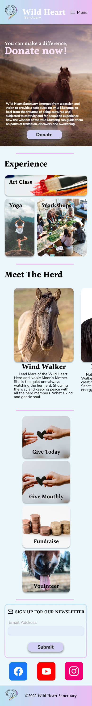
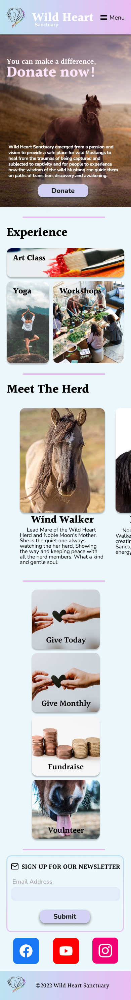

Storyboard

Add description here!!!
Wild Heart Sanctuary is all about helping wild and rescued mustangs live a fulfilling life.
What feelings do you want your site to portray to the visitors? A peaceful, magical place where Wild Mustangs connect with your heart. A Forever home for rescued wild horses. Love, peace, harmony & healing Describe Wild-Heart Sanctuary in three-five adjectives. Blissful, harmony, joyful, heartfelt, nature, wild What are the top three things you want visitors to accomplish on the website? See the beauty of Wild Heart Sanctuary and the Horses. Raise funding to keep care of the horses. Signing up for events and yoga & personal visits What would you like to be changed on the current website? Visually update it. We have several different fund raising intakes. Donorbox, Square, PayPal, Venmo, STRIPE, WIX etc. Would like to fine tune that down to 1-2 that is most cost effective. Update the site to be more user friendly and we also have a ‘call to action’ we need updated to sign petitions for the horses etc. What would you change on this website to help it generate more donations? Simplify it and have the right wording, photos etc. that people will take action and help us out :) Need help with this. A call to action and a reason why to donate NOW. For example, we need $18,000 for hay this year….. how do we get big donors and matching donations etc. In your opinion, what are the strengths of the current website design? Photos of the horses? I feel it needs to be more focus and aesthetically beautiful.
Add description here!!!
Add description here!!!
Add description here!!!
Add description here!!!
 

With the research, testing and prototyping we did, we were able to come up with a great design to help improve the goal of creating an efficient workflow for making donations. The new site is a lot more fluid and visually connecting. Making the donation button front and center and removing the different workflows for donation and making it one really makes the process easier for contributors to the sanctuary.